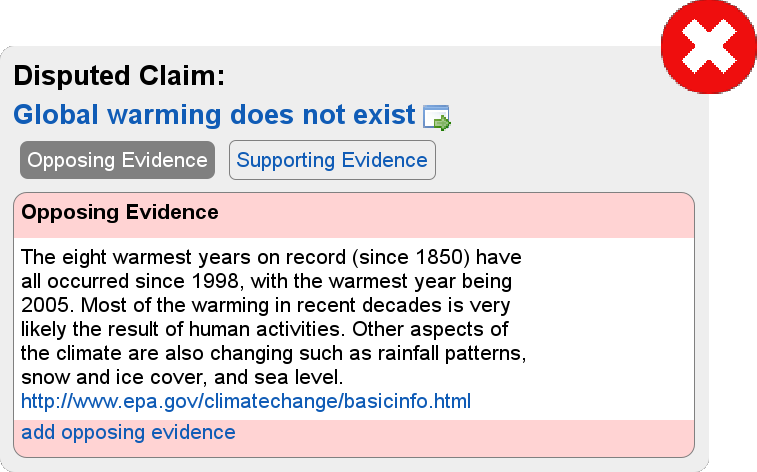
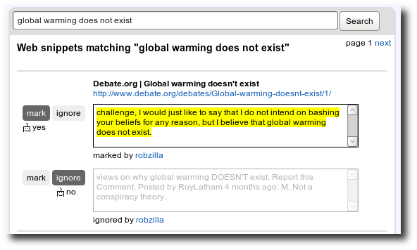
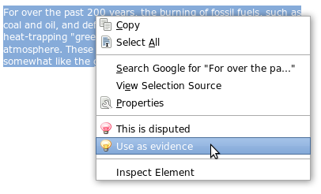

Labs
Dispute Finder
beta
Reveal the other side of the story
About
Install
FAQ
Claims
Pages
Me
Feedback
Skeptical Readers
Install the
Dispute Finder Extension
Dispute Finder
highlights disputed claims
on pages you read on the web
Click on a claim to
see web articles that support other points of view

Activists
Install the
Dispute Finder Extension
Tell Dispute Finder about a
claim on the web that you disagree with
Train Dispute Finder
to find pages on the web that make this claim 
Give Dispute Finder
arguments for other points of view

Skeptical Readers will now be told that this claim is disputed when they read a page on the web that makes this claim